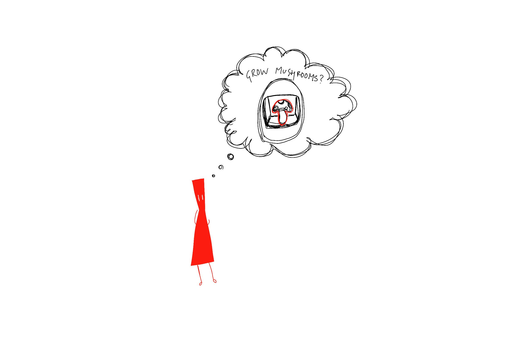
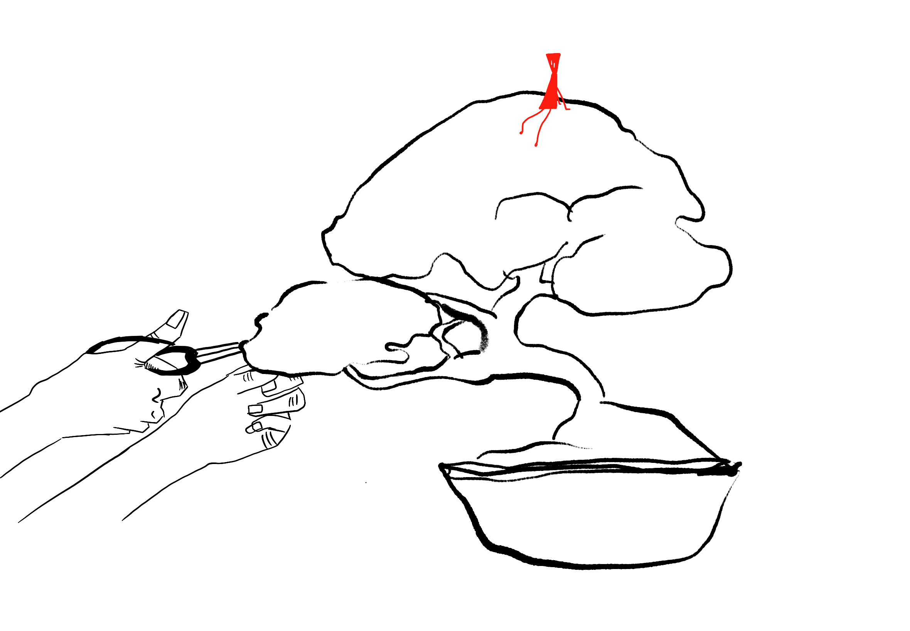

Taking Care vs Manipulation
 How do the concepts of care and manipulation interrelate and influence one another in various contexts? What is care? What is manipulation?
This research begins with a sense of curiosity and reflection when I was conceptualizing my final graduation project – a grow chamber for mushrooms. To understanding our identity, contemplating our actions, and examining the ways in which we shape the structures we create.
Contents
-
1 Technology
- 1.1 The Positive
- 1.2 The Negative
- 1.3 Ethical Reflection
- 1.4 Us + Nature
- 2 The Dilemma
-
3 Cultural Context
- 3.1 GMOs
- 3.2 Bonsai
- 3.3 Indigenous Land Management
- 4 Alternative Approaches
Technology
The Positive
Technology has played a significant role in blurring the lines between taking care and manipulation. On the one hand, technology has provided us with powerful tools to monitor, understand, and protect the environment. For instance, sensors and data analytics that enable us to track deforestation, pollution levels, and changes in biodiversity.
The Negative
On the other hand, technology has also enabled humans to manipulate nature in unprecedented ways.
Ethical Reflection
Genetic engineering, artificial intelligence, and advanced materials allow us to modify organisms, create new substances, and transform landscapes. While these advancements hold the potential to solve some of our most urgent environmental challenges, they also raise ethical concerns about the unintended consequences and the potential loss of control over natural systems. As societies become more dependent on technology for environmental management, there lies the risk of overlooking simpler, traditional and potentially more sustainable approaches. Over Reliance on complex technological solutions may lead to neglecting nature-based strategies.The complexity of ecosystems also make it challenging to predict all possible consequences of technological interventions. Modifying a specific aspect of an environment may have far-reaching and interconnected effects that are difficult to predict, leading to ecological imbalances. It is crucial to recognize these potential consequences as part of a comprehensive evaluation of the “ethical” and environmental implications of advancing technology. Striking a balance between manipulating technology for positive environmental outcomes and avoiding unintended harm requires careful consideration of these complexities.
Us + Nature
The difference in perception is reflected in various aspects of our interactions with nature, from resource extraction to land management strategies. Recognizing and understanding these cultural differences is vital for finding common ground and establishing a healthier relationship with the natural world. The balance between taking care and manipulation is not a static concept. As our understanding and impact of our actions evolve, we need to adapt our approaches to management and intervention.
The Dilemma
The dilemma between taking care and manipulation extends beyond agriculture and art encompassing various aspects of our relationship with nature. The key lies in recognizing that we are not separate from nature but an integral part of its intricate web of life. Our actions, whether taking care or manipulating, have effects throughout the ecosystem. Therefore, we must approach our interactions with nature with humility, respect, and a deep understanding of the interconnectedness of all living things.
Finding this harmony requires a shift in our perspectives, moving away from a view of nature as a resource to be exploited towards a recognition of its intrinsic value. It is through this shift in consciousness that we can find a harmonious coexistence with nature, striking a balance between taking care and manipulation.
A popular belief among our society is that the basis of most of our destructive tendencies is to survive and therefore we must manipulate nature. A lot of science and technology that is used to help humans thrive and progress is based on the manipulation of nature. Livestock, for instance cows, are supposed to survive off grass, however we feed them corn in order to mass farm for our own needs. This is a form of manipulation. Who am I to say whether this is right or wrong? In the end, I also fall under the category of manipulator, since I also need food in order to survive in our modern society. My point is, most humans presume that we can just manipulate nature as much as we want, which results in great damage to our ecosystem. Are there ways in which technology and science can be harnessed to work in harmony with nature rather than against it? With the inevitable advancements in the field of technology, it is wise to encourage a more forward-looking perspective, steering conversations towards constructive solutions and a more sustainable coexistence with the natural world.
blank
Cultural Context
Genetically Modified Organisms (GMOs)
Genetically modified organisms (GMOs) in agriculture offer a prime example of this conundrum. It can enhance crop yields, reduce pesticide use, and increase resistance to pests and diseases. This type of manipulation of nature holds the potential to address global food security challenges and improve agricultural sustainability. However, the widespread adoption of GMOs raises concerns about potential ecological impacts, the loss of biodiversity, and the ethical implications of altering the genetic makeup of food crops. The manipulation of nature, in this case, raises questions about the long-term consequences of our interventions.
Bonsai
Contrarily, the Japanese art of bonsai exemplifies a harmonious blend of taking care and manipulation. Bonsai enthusiasts meticulously cultivate miniature trees, shaping and pruning them to achieve a desired aesthetic. This process involves a deep understanding of the plant’s natural growth patterns and the ability to gently guide its development. The bonsai artist does not seek to radically transform the tree but rather to enhance its inherent beauty and resilience. The manipulation is subtle and respectful, allowing the tree to express its natural form within the constraints of the pot. This delicate balance between human intervention and natural expression is a testament to the art of bonsai.

Indigenous Land Management
Indigenous land management practices provide another insightful perspective on this tension between care and manipulation. For centuries, indigenous communities have developed deep ecological knowledge and practices that maintain the health and productivity of their lands. These practices often involve harvesting, controlled burning of the land, and the introduction of specific species to enhance biodiversity. These manipulations are not driven by the desire to control nature but rather by the respect for the interconnectedness of all living things. It demonstrates a holistic approach to caring for nature, while balancing human needs with the preservation of ecosystems.

Alternative Approaches
While searching for harmony between care and manipulation, alternative approaches emerge like unexplored trails in a forest. One route guides us to biomimicry – a collaboration with nature rather than an opposing position. Embracing the beauty of evolution, biomimicry urges us to draw inspiration from nature’s solutions and implement them in our challenges and designs. This isn’t manipulation; it’s a symbiotic collaboration, a mutual connection where both nature and humanity gain benefits.
Diving into symbiotic design offers another path down the trails. By exploring a cooperative partnership with nature, seeking inspiration from the intricate relationships with ecosystems. Symbiotic design transcends the traditional division of care and manipulation by fostering an alliance. In this approach, we become co-creators with nature. Symbiotic design envisions a reciprocal exchange, where human innovations contribute positively to the ecological landscape. It allows us to weave a narrative where our interventions become integrated elements, showcasing the potential for sustainable coexistence.
Diving into symbiotic design offers another path down the trails. By exploring a cooperative partnership with nature, seeking inspiration from the intricate relationships with ecosystems. Symbiotic design transcends the traditional division of care and manipulation by fostering an alliance. In this approach, we become co-creators with nature. Symbiotic design envisions a reciprocal exchange, where human innovations contribute positively to the ecological landscape. It allows us to weave a narrative where our interventions become integrated elements, showcasing the potential for sustainable coexistence.
Tamagotchipedia |
|

|
|
Born |
Mother Nature Age: ~ 4.5 billion Planet Earth |
Occupation |
Guardian of the Natural World |
Spouse(s) |
Father Time |
Children |
Countless, including seasons, elements, and various forms of life |
Acadamy Awards |
Best Seasonal Performance |